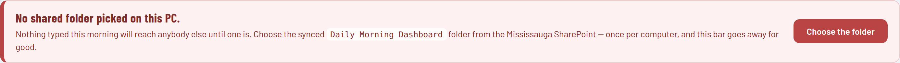
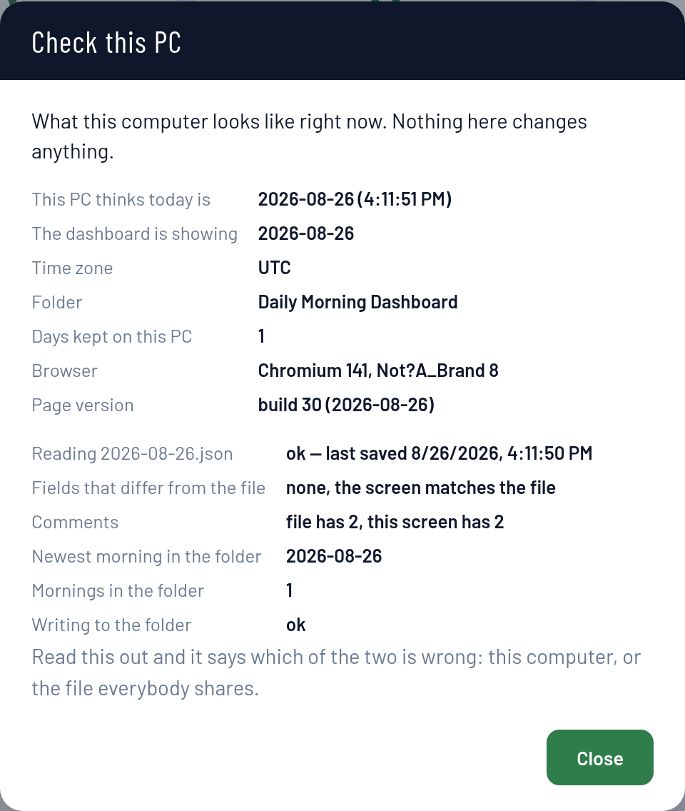

If you only read one thing
You never create a folder. The folder already exists on SharePoint. On each computer you press Sync once, and Windows makes the local copy itself. Everything else in here is detail around that one act.
Two minutes of reading that will save whoever inherits this an afternoon.
There is one folder, on SharePoint. Inside it are the dashboard itself and one small file
per day — 2026-08-25.json and so on — holding that morning's numbers and
comments.
Every computer keeps a mirror of that folder, made by OneDrive. When somebody presses Save, the dashboard writes into the mirror on their PC and OneDrive carries it to everybody else's within a minute. Nobody has to take turns, and two people typing different things never overwrite each other — the page reads the shared file back before it writes and puts in only what actually changed on that screen.
If half the plant is on SharePoint and half is somewhere else, the morning quietly splits in two and each half thinks the other stopped writing. One folder, no exceptions.
Not a copy in Downloads, not one from an email. An old copy does not know about boxes added since, and saves them back empty over everybody else's. The page checks for this now and shows a red bar, but the cure is simply never to keep a private copy.
What you type is kept on your own PC as well as in the folder. If the network drops or the folder is unreachable, the dashboard says so plainly and keeps your morning locally until it can share it. It will not pretend a failed save worked.
Both of these were done once and do not need doing again. They are here so the next person knows where things live.
Morning_Dashboard.html lives in that folder — this is the dashboard.Nine steps, about two minutes, once per computer and never again. Do them in order — the folder has to exist on the machine before the dashboard can be pointed at it.
Edge or Chrome. Sign in with the work account that person actually uses — whichever account is signed in here is the one whose permissions decide if they can save.
outlook.com, gmail or hotmail address
will never work, no matter what is shared with it. Microsoft will say
"does not exist in tenant 'Max Solutions, Inc'". That is not a permission you can
grant — the account has to live inside the company directory.
Double-click into it so you can see the files inside. This matters more than it looks: pressing Sync at the top of the library copies down everything in Documents. Pressing it from inside this folder copies down only this folder.
It sits along the top of the file list. If it is not visible it is under the
⋯ menu. Windows will ask to open the OneDrive app — say yes, and sign in
again if asked.
The OneDrive cloud in the bottom-right of the screen spins while it copies, then settles. On a folder this small it takes seconds.
It appears in the left-hand sidebar under the company name, with a building icon. That is not the same as the blue personal OneDrive cloud above it — a lot of people click the wrong one.
Do not skip this one. Left alone, OneDrive saves space by keeping files in the cloud and only fetching them when opened. The dashboard reading one of those can come back empty — which looks exactly like somebody's morning having been wiped, and sends people hunting for a fault that is not there.
Morning_Dashboard.html from that folderDouble-click it where it now sits on the PC. Not a copy anywhere else. It is worth right-clicking it once and sending a shortcut to the desktop, so nobody is tempted to keep their own copy.
It is the first button at the top of the dashboard. On a computer that has not been set up yet there is also a red bar across the page saying the same thing.

This is the single most important click in this document.
The red bar goes. That computer is finished. Chrome asks once more after a restart, which is one click, not the whole setup again.
The machine on the wall in the morning meeting. Same nine steps, two differences.
The boardroom PC is not on the company domain, so nobody's account is on it by default. That does not mean it cannot be done — syncing a SharePoint folder has nothing to do with domain membership. It only needs somebody to sign into OneDrive on it once, with a Max Solutions account that can see the library.
Use a shared account, not a person's. A wall PC signed in as somebody who has left the company is a problem waiting to happen.
If the boardroom screen only ever shows the morning, give it read access and nothing more. A machine that cannot write cannot damage anybody's morning, and it will never fail in front of the room trying.
If people do type into the dashboard from the boardroom during the meeting, answer Edit files like any other PC, and that account needs Edit on the library.
It goes full screen and shows the shared morning — reading the folder, writing nothing. It refreshes itself every fifteen seconds, so comments typed by people at their desks appear on the wall during the meeting without anybody touching the boardroom keyboard.
What the buttons do, and what each thing that can go wrong actually means.
| Button | What it does |
|---|---|
| Edit | Turns the boxes on so the morning can be typed into. |
| Save | Reads the shared morning, merges what you changed into it, and writes it back. It will tell you if it could not, and it never pretends. |
| Present | Full screen, read-only. What the boardroom uses. |
| Choose folder | Points this PC at the shared folder. Used once, and again only if Chrome forgets. |
| Check this PC | Says what this computer looks like — its clock, its folder, whether the screen matches the shared file. Start here when one machine behaves differently from the rest. |
| What you see | What it is, and what to do |
|---|---|
| Red bar: no shared folder picked on this PC | Steps 8 and 9 have not been done here, or Chrome dropped the permission after a restart. Press Choose folder. |
| Red bar: this is an old copy of the dashboard | Somebody is running a newer version. Close the tab and open the copy in the SharePoint folder. Saving from an old copy blanks out boxes it does not know about. |
| NOT shared — saved on this PC only | The write was refused. Almost always View files was chosen at step 9, or the account has read-only on the library. Nothing is lost; the morning is still on that PC. |
| Boxes empty that should not be | Always keep on this device was not set at step 6, so Windows is handing over placeholders instead of files. Set it and reopen the dashboard. |
| One PC shows a different day from everyone else | That computer's clock is wrong, so it is reading and writing a different day's file. Press Check this PC — it says so outright. |
Files like 2026-08-25-SOMEPC.json in the folder |
Two people saved inside the same sync minute and OneDrive kept both copies. The dashboard finds these and folds them back in by itself. Nothing to do. |
Files like dashboard-2026-08-25.json |
Somebody's personal export saved into the shared folder by mistake. Nobody reads
those. The morning everybody sees is the file named just 2026-08-25.json. |
| Somebody's comment went missing | Press Check this PC on the machine that lost it. Failing that, SharePoint keeps a version history on every one of these files — right-click the day's file on the SharePoint site and choose Version history. |

It is one file. Put the new Morning_Dashboard.html into the SharePoint folder,
replacing the old one, and everybody has it the next time they open it. Nothing to install,
nothing to roll out, no PC to visit.